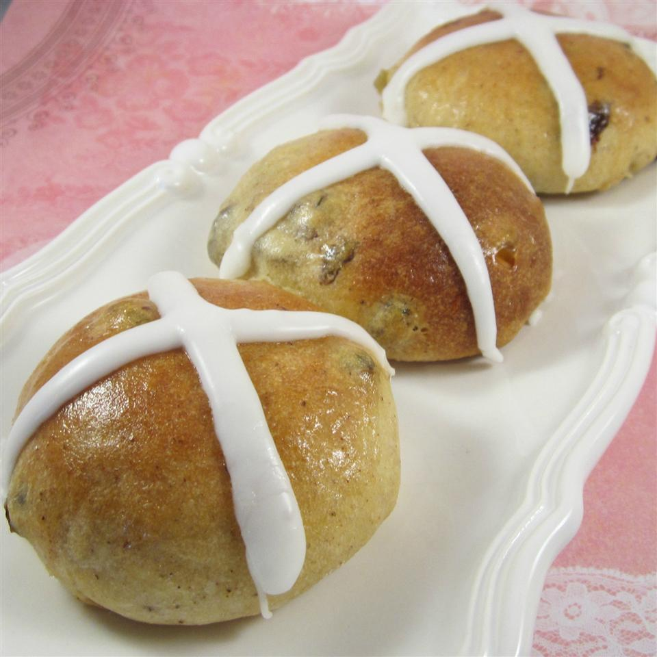

British Hot Cross Buns

Source
Description
One a penny, two a penny ... though these days they are a lot more expensive.
Ingredients
- ½ cup milk
- ½ cup all-purpose flour
- 2 ½ teaspoons active dry yeast
- 1 ⅔ cups all-purpose flour
- ⅓ cup white sugar
- ½ teaspoon salt
- ¼ teaspoon ground cinnamon
- ¼ teaspoon ground cloves
- ¼ teaspoon ground ginger
- ¼ teaspoon ground nutmeg
- ¼ cup unsalted butter, softened, cut into pieces
- 1 egg
- ⅔ cup dried currants
- ¼ cup diced candied citron
- Glaze - 2 tablespoons white sugar, 1 tablespoon water
- Icing - ⅔ cup confectioners' sugar, 2 teaspoons water
Steps
- Heat milk in a small saucepan to 110 degrees F (43 degrees C); pour milk into a bowl. Whisk 1/2 cup flour and yeast into milk; cover with plastic wrap and let stand until bubbly, about 15 minutes.
- Place 1 2/3 cups flour, 1/3 cup white sugar, salt, cinnamon, cloves, ginger, and nutmeg into the bowl of a stand mixer with paddle attachment; turn mixer on for a few seconds on low speed to combine. Place butter into flour mixture; mix on low speed until incorporated, about 2 minutes.
- Place yeast mixture and egg into flour mixture; mix on low speed for 2 minutes. Stop mixer and allow to rest for 10 minutes; mix on medium speed until smooth and elastic, about 2 minutes. At slowest speed, mix currants and citron into dough until evenly distributed, about 1 minute.
- Butter the inside of a large bowl; place dough in bowl, turn to butter dough on all sides. Cover bowl with plastic wrap; let dough rise in a warm place until doubled in size, about 1 hour.
- Line a baking sheet with parchment. Turn dough out onto a lightly floured surface. Pat dough into a rough square, and cut into 12 equal pieces. Form each piece into a round bun; place on prepared baking sheet. Press a cross into each bun with the back of a knife; cover buns with a damp cloth and allow to rise until doubled in size, about 45 minutes.
- Preheat oven to 375 degrees F (190 degrees C).
- Bake buns in the preheated oven until deep golden brown, about 15 minutes.
- Bring 2 tablespoons white sugar with 1 tablespoon water to a boil in a small saucepan. Remove buns from oven; lift parchment and transfer buns to a wire rack. Brush immediately with sugar glaze; allow buns to cool completely, about 20 minutes.
- Stir confectioners' sugar and remaining 2 teaspoons water together in a small bowl; heat icing mixture in microwave until smooth and warm to the touch, about 10 seconds. Place icing in a sandwich bag, snip off one corner of the bag, and pipe in a cross over fully cooled buns; allow icing to dry for 30 minutes.